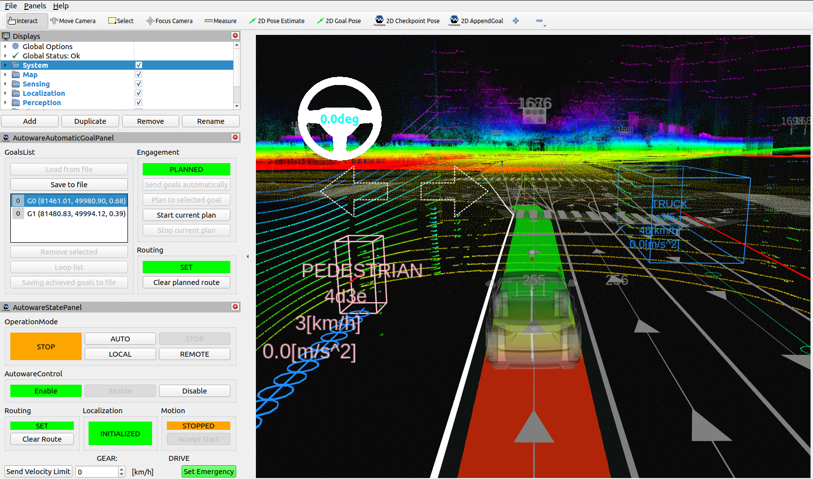
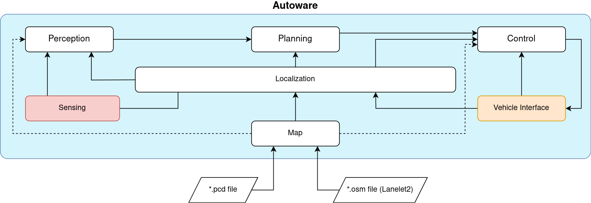

Autoware

Autoware is an open-source software platform specifically designed for autonomous driving applications. It was created to provide a comprehensive framework for developing and testing autonomous vehicle systems. Autoware offers a collection of modules and libraries that assist in various tasks related to perception, planning, and control, making it easier for researchers and developers to build autonomous driving systems.
The primary purpose of Autoware is to enable the development of self-driving technologies by providing a robust and flexible platform. It aims to accelerate the research and deployment of autonomous vehicles by offering a ready-to-use software stack. Autoware focuses on urban driving scenarios and supports various sensors such as LiDAR, Radars, and Cameras, allowing for perception of the vehicle's surroundings.
Why use AWSIM with Autoware?
Autoware can be used with a AWSIM for several reasons. Firstly, simulators like AWSIM provide a cost-effective and safe environment for testing and validating autonomous driving algorithms before deploying them on real vehicles. Autoware's integration with a simulator allows developers to evaluate and fine-tune their algorithms without the risk of real-world accidents or damage.
Additionally, simulators enable developers to recreate complex driving scenarios, including difficult conditions or rare events, which may be difficult to replicate in real-world testing with such high fidelity. Autoware's compatibility with a AWSIM allows seamless integration between the software and the simulated vehicle, enabling comprehensive testing and validation of autonomous driving capabilities. By utilizing a simulator, Autoware can be extensively tested under various scenarios to ensure its robustness and reliability.
Architecture

In terms of architecture, Autoware follows a modular approach. It consists of multiple independent modules that communicate with each other through a ROS2. This modular structure allowing users to select and combine different modules based on their specific needs and requirements. The software stack comprises multiple components, including perception, localization, planning, and control modules. Here's a brief overview of each module:
-
Sensing - acquires data from sensors different sensors mounted on the autonomous vehicle such as LiDARs, GNSS, IMU and cameras. It pre-processing received data in order to later extract relevant information about the surrounding environment through the Perception module or about vehicle location by the Localization module. More details here.
-
Perception - performs advanced processing of sensor data (LiDARs, cameras) to extract meaningful information about the surrounding environment. It performs tasks like object detection (other vehicles, pedestrians), lane detection, and traffic lights recognition. More details here.
-
Localization - performs a fusion of data from Sensing module like LiDAR, GNSS, IMU, and odometry sensors to estimate the vehicle's position and orientation accurately. More details here.
-
Planning - generates a safe and feasible trajectory for the autonomous vehicle based on the information gathered from Perception and Localization. It also takes into account various factors from Map like traffic rules and road conditions. More details here.
-
Control - executes the planned trajectory by sending commands to the vehicle's actuators, such as steering, throttle, and braking. It ensures that the vehicle follows the desired trajectory while maintaining safety and stability. More details here.
-
Vehicle Interface - is a crucial component that enables communication and interaction between Autoware software system and a vehicle. It facilitates the exchange of control signals and vehicle information necessary for autonomous driving operations. The vehicle interface ensures that Autoware can send commands to the vehicle, such as acceleration, braking, and steering, while also receiving real-time data from the vehicle, such as speed, position, and sensors data. It acts as a bridge, allowing Autoware to seamlessly interface with the specific characteristics and requirements of the vehicle it is operating with. More details here.
-
Map - the map module creates and maintains a representation of the environment in which the autonomous vehicle operates. It combines data from Lanelet2 (
*.osm) and PointCloud (*.pcd) to generate a detailed map. The map contains information about road geometries, lane markings, traffic lights, rules, and other relevant features. Map serves as a crucial reference for planning and decision-making processes. More details here.